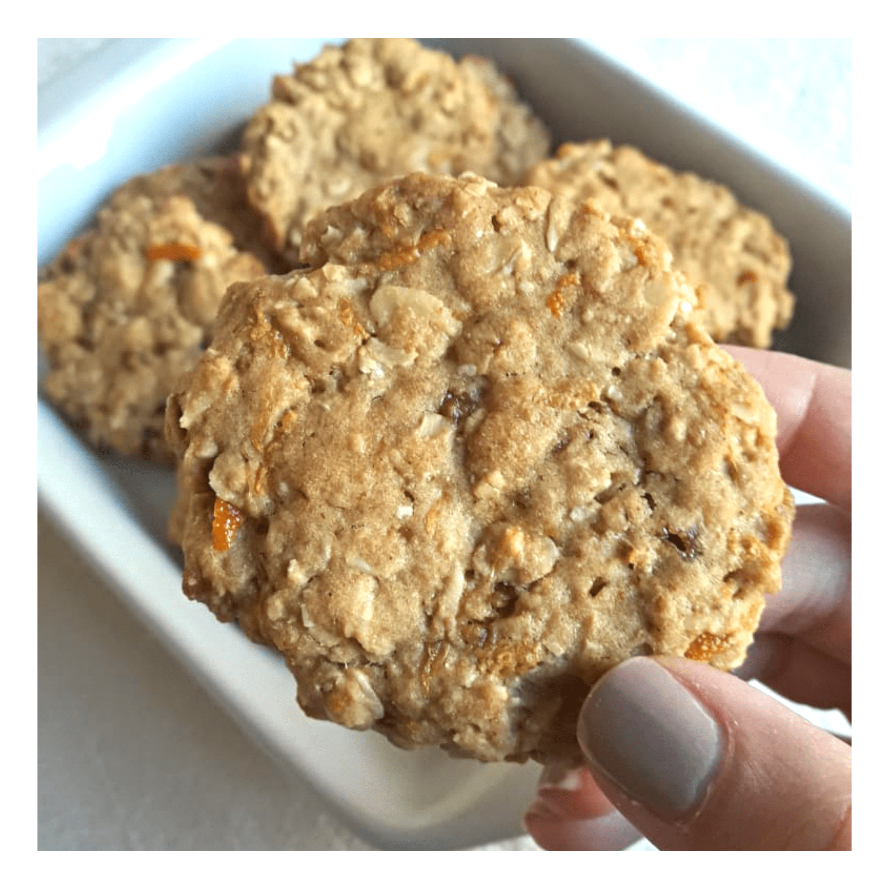
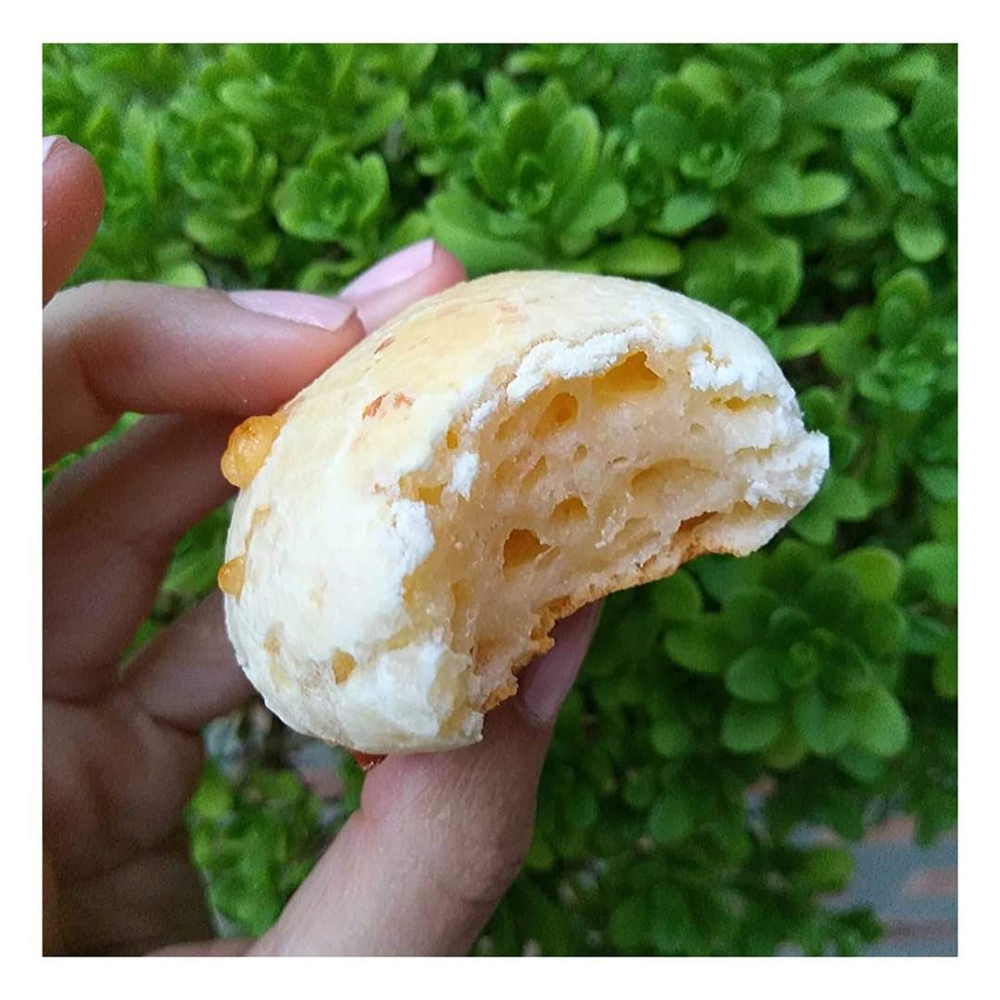

GALLETITAS DE AVENA
Estas galles las hicimos ayer para los mates de la tarde. Además de fáciles son riquísimas y pueden aprovechar para hacerlas con l@s más peques!
Necesitan
- 1 taza de avena en hojuelas
- 1 taza de harina a elección
- 2/3 taza de azúcar
- 1 pocillo de aceite (6 cdas aprox)
- 1 taza de avena en hojuelas
- 1 taza de harina a elección
- 1 pocillo de aceite (6 cdas aprox)
- 2 cdas soperas de agua
- Ralladura de 1 limón
- Ralladura y pulpa de 1 naranja
- 1 cdita de polvo para hornear
- 2/3 taza de azúcar
Procedimiento
- Coloquen los ingredientes en un bowl, agregando de a poquito el agua mientras baten con un batidor de mano. Si no lo hacen de a poco, se forman grumos. Baten baten baten 1 minutito, y llevan a la heladera 15 minutos.
- En una pizzera o fuente para horno coloquen 2 cdas de aceite de oliva y lleven a horno precalentado a temperatura moderada (180°). Solo hasta que se caliente.
- Cuando la pizzera esté caliente, saquen de la heladera la preparación y batan un poquito una vez más (queda líquida, ESTÁ OK!). Coloquen en la pizzera y lleven con cuidado al horno nuevamente.
- Cocinen hasta que esté doradita y listo! Si quieren pueden agregarle algun topping como hicimos acá 😊, yo no suelo hacerlo pero quedó genial. Tiene tomate, albahaca, y queso.
ROLLITOS DE MEMBRILLO
Ame la textura, consistencia, sabor, todo. Son muy ricos y suaves
Necesitan
- 2 tazas de harina
- Azúcar (100g)
- 1 Pocillo de aceite neutro
- 2 huevos grandes
- 2 cditas de polvo para hornear
- Ralladura de 1 limón
- 1 cdita de esencia de vainilla
- Pizca de sal
- Dulce de membrillo 250g aprox
Procedimiento
- Batir los huevos con el azúcar, agregar el aceite, la ralladura y la esencia y continuar batiendo.
- Agregar de a poco los secos: harinas, pizca de sal y polvo para hornear e integrar bien con una espátula. Les va a quedar una masa blanda pero maleable, si no es así, pueden agregar un chiquitín más de harina. Dejar descansar unos minutitos tapada en la heladera.
- En la mesada enharinada estirar la masa con un palo de amasar (frasquito, lo que tengan). *Yo dividí la masa en dos partes para estirarla así no me quedaban rollitos inmensos.
- Derretir el dulce de membrillo con un chorrito de agua en el microondas o en un jarrito y esparcir sobre la masa ya estirada. Enrrollar con cuidado.
- Por último cortar en rodajas del tamaño que quieran y colocar sobre una placa aceitada. Cocinar 15 min aprox, hasta que estén doraditos!!


CHIPÁ
Hola, cómo andan? Ayer salieron estos ricos #chipas en casa. Vi varias recetas y esta me pareció bastante práctica para compartirles, quedaron tremeeeeendos!
Necesitan
- 250 gr de fecula de mandioca
- 150 gr de queso.
- 1 huevo
- 6 cdas de leche descremada
- 4 cdas de agua
- 2 cdas de aceite
- 1/2 cdita de polvo para hornear
Procedimiento
- Coloquen los ingredientes en un bowl, agregando de a poquito el agua mientras baten con un batidor de mano. Si no lo hacen de a poco, se forman grumos. Baten baten baten 1 minutito, y llevan a la heladera 15 minutos.
- En una pizzera o fuente para horno coloquen 2 cdas de aceite de oliva y lleven a horno precalentado a temperatura moderada (180°). Solo hasta que se caliente.
- Cuando la pizzera esté caliente, saquen de la heladera la preparación y batan un poquito una vez más (queda líquida, ESTÁ OK!). Coloquen en la pizzera y lleven con cuidado al horno nuevamente.
- Cocinen hasta que esté doradita y listo! Si quieren pueden agregarle algun topping como hicimos acá 😊, yo no suelo hacerlo pero quedó genial. Tiene tomate, albahaca, y queso.